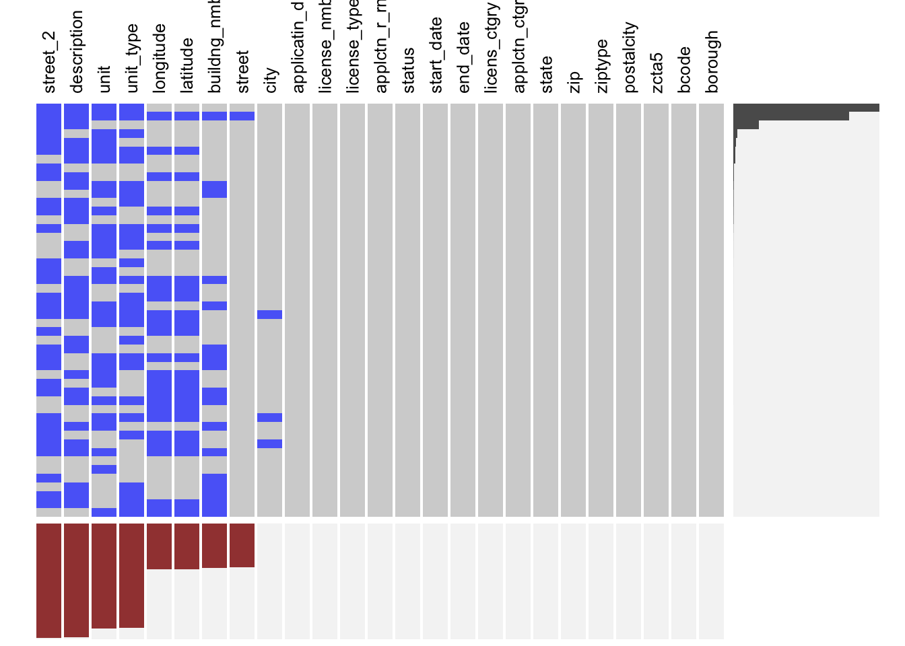

Chapter 4 Missing values
Most missing values in our pre-processed business application dataset are concentrated in variables related to business address details such as building unit or office suite number. Within variables that we care about the most such as zip codes, application status, and broader geographical unit the applicant is located in, missing values are non-existent.
The bar chart below features variable names with most missing values in a descending order from top to bottom. Other variables that are not shown here do not have any missing values. The information in variables with missing values fortunately carries little importance in our analysis. For all of the small number of observations where city (representing the neighborhood-level jurisdiction of an area where applicants are located in), zip code values are present that help us map to a broader area for aggregation.

In addition, we use the extracat package for analyzing the pattern in missing data.1 The main area in the chart below shows all combination of missing values across columns and rows. The gray horizontal columns in the right-most area show the frequency of respective row-wise patterns. The magenta vertical bars in the bottom area show the frequency of column-wise patterns.
This graphical analysis indicates that the most frequent missing pattern is the one where an applicant did not provide any input for the second street address (street_2), additional description of the location of the business (description), unit number (unit) and unit type (unit_type). The second most frequent pattern lacks additional information on geographical coordinates (longitude & latitude) and street name (street). These patterns likely reflect the fact that individual applicants are free to set up a business anywhere in the city, regardless of the address used when filing.

As this package is currently unavailable in CRAN, we used an archived package from Prof. Joyce Robbins’ repository.↩︎